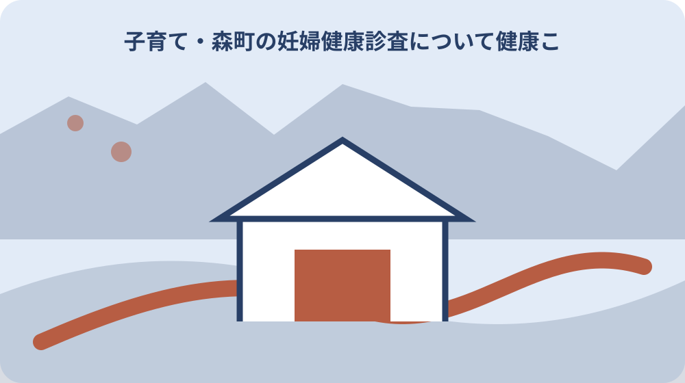
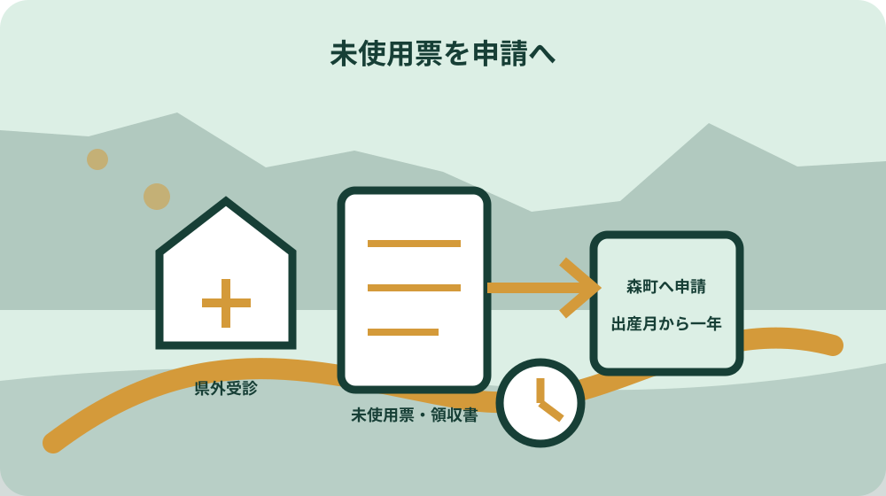

先に結論を確認する
この記事の答え：受診票を種類別に数え、一回一行で票番号、週数目安、予約日、受診先、使用結果、自己負担、残票数を記録します。多胎追加票と県外受診で使えなかった票は別レーンにし、医療判断は担当医、票の扱いは森町健康こども課へ確認します。
森町で最初に照合する条件：母子健康手帳を受け取った日に、通常受診票、多胎追加票、超音波等の票を種類別に数え、票面の週数目安と番号を台帳へ写す。
結論は受診票を一回一行の台帳へする
森町で妊婦健康診査受診票を受け取ったら、冊子のまま保管するだけでなく、一回の受診を一行にした台帳を作ります。左から票の種類、票番号、週数目安、予約日、医療機関、使用結果、領収書、残票数を並べると、次に持参する票を家族も確認できます。
森町は通常の妊婦健康診査受診票16回分に加え、超音波検査等の受診票を渡すと案内しています。多胎妊娠では追加票が5回分あります。同じ封筒に入っていても役割や使う順番は同じではないため、台帳の行色と保管ポケットを分けます。
この記事の直接回答は、受診票を医療判断の代わりにしないことです。票面の週数は予定を組む目安、実際の予約と検査は医療機関の指示、使えない票や助成申請は森町の案内という三層へ分けます。受診票が残っていることだけで受診不要とは判断しません。
完成物は妊娠全般の予定表ではなく、受診票の使用履歴と残数を再現する一件台帳です。体調の詳しい記録や検査結果は母子健康手帳と医療機関の記録へ置き、台帳には次回予約、持参票、未確認事項、相談先だけを記します。
交付日に受診票の種類と枚数を確認する
母子健康手帳の交付を受けた日は、手帳だけを確認して終えず、同時に受け取った受診票を机へ広げます。森町の案内にある通常票16回分、超音波等の票、該当する人の多胎追加票を種類別に数え、表紙や票面に書かれた名称をそのまま台帳へ写します。
交付時点で使い終えた票がある、転入前の自治体の票が混じる、医療機関から別の用紙を渡されたという場合は、総数だけを合わせません。交付元、使用日、未使用、差替え待ちという状態を一枚ずつ付け、森町で利用できる票かを確認します。
森町の母子健康手帳交付ページは、妊娠届出書、マイナンバーが分かるもの、本人確認書類などを持ち物として案内しています。交付前はこれらの準備表を使い、交付後は受診票台帳へ切り替えます。個人番号や本人確認書類の写しを受診票台帳へ貼る必要はありません。
台帳の版は交付日を起点にします。追加交付、再交付、転入時の差替えがあれば古い一覧を消さず、新しい受領日と増減枚数を追記します。最初の総数、使用済み、未使用、医療機関へ提出中の合計が一致する形にします。
週数目安と医療機関の指示を別欄にする
こども家庭庁は標準的な頻度として、妊娠23週までは4週間に1回、24週から35週までは2週間に1回、36週から出産までは1週間に1回を示しています。この区分を台帳の薄い背景線にし、予約を忘れないための目安として使います。
標準頻度に沿うと出産まで14回程度ですが、森町が渡す通常受診票は16回分と案内されています。数字の差だけから余る、無料になる、追加受診へ使えると結論を出しません。票面の対象週数と医療機関の指示、森町の扱いを一回ごとに確認します。
妊婦や胎児の状態によって、健診間隔や検査内容は変わります。台帳へは『標準目安』と『医療機関が指定した次回日』を別の列に置きます。指定日が目安と違っても自分で直さず、受診先から説明された日付を優先して記録します。
予約変更時は、元の予約日、変更日、連絡先、次の予約、持参する票を残します。体調変化や心配があるとき、次の定期日まで待つかを台帳で判断しません。医療機関へ連絡し、緊急時の案内に従います。
通常票と超音波等の票を重ねて扱わない
妊婦健診では問診や診察、体重、血圧、尿検査などの基本項目に加え、血液検査や超音波検査が行われることがあります。こども家庭庁は検査内容が医療機関の方針や母体・胎児の状態、担当医の判断によって異なると説明しています。
そこで通常票と超音波等の票を一枚の『健診券』欄へまとめません。予約行ごとに、通常票番号、追加検査票の名称、医療機関から示された検査、当日使用した票を別々に記録します。使うと思って持参したが未使用だった票も戻した日を残します。
窓口で複数の票を提出した場合は、返却された票と領収書を受診後に照合します。自己負担があったときは金額だけでなく、何の検査や費用か領収書・明細で確認し、分からなければ医療機関へ尋ねます。公費票があるから全費用が必ず無くなるとは限りません。
家族が会計を手伝う場合も、検査の必要性や結果を代わりに解釈しません。共有するのは持参票、予約時刻、送迎、会計書類の保管場所までにし、医療内容は本人が希望する範囲で医療者と確認します。
多胎追加票の開始位置を別レーンで管理する
森町は多胎妊婦へ追加で5回分の多胎妊婦健康診査受診票を渡します。通常票の横に追加票専用のレーンを作り、交付枚数、票番号、残数を別に管理します。通常16回分と追加5回分を最初から21回の連番へ混ぜません。
森町の案内では、多胎追加票は通常の妊婦健康診査受診票を14回使用した後、15回目から使えます。一方、多胎妊娠では追加票に書かれた受診週数の目安より早く使えるとされています。台帳へは通常票の使用回数と実際の受診回数を別に置きます。
追加票を使う候補日には、通常票使用済み回数、医療機関からの指示、追加票の番号、森町へ確認した日を記します。15回目という言葉を妊娠週数や暦上の15回目と取り違えないよう、何を数えた回数か列名に明示します。
受診回数が増えたとき、どの票から使うかを家族の都合で決めません。医療機関と健康こども課へ確認し、回答を台帳へ残します。残票がある場合も、出産後に別の用途へ使えると考えず、返却や保管の扱いを森町へ尋ねます。

県内委託先と県外里帰り先を先に分ける
里帰り出産を考えたら、予約より前に受診先が静岡県の委託契約先か、森町の受診票をその場で使えるかを確認します。台帳には医療機関名、所在地、初診予定日、票の使用可否、確認相手、確認日を置きます。知人が使えたという情報だけで決めません。
森町は、静岡県が委託契約していない医療機関または助産所で受診票を使えなかった場合、健診費用の一部助成を案内しています。これは受診票が使えない状況を想定した後日の申請であり、全額返る、すべての検査が対象になるとは書き換えません。
里帰り前の行には、森町で最後に受診する日、県外で最初に受診する日、紹介状の扱い、受診票の残数、助成相談日を並べます。医療情報の引継ぎと公費票の精算を同じ手続として扱わず、それぞれの確認先を分けます。
里帰り先が変更になった場合は旧医療機関の行を削除せず、取消日と新しい受診先を追加します。委託状況は時点で変わる可能性があるため、初回だけでなく受診先変更や年度をまたぐときにも森町へ確認します。
使えなかった受診票と領収書を一組で残す
県外受診で票を使えなかった日は、未使用票を受診後の領収書と同じ透明ポケットへ入れます。森町は申請時に母子健康手帳、未使用の妊婦健康診査受診票、領収書を必要書類として案内しています。票へ自分で使用済み印を付けません。
領収書はレシートでは不可と森町が明記しています。医療機関名、受診日、金額、受診者名が確認できる書類かを受け取った日に見ます。不足があれば時間がたってからではなく、医療機関の会計窓口へ早めに相談します。
通帳またはキャッシュカードなど振込口座が分かるものと認印も案内されています。ただし、口座番号の写真や暗証情報を家族共有の台帳へ貼りません。台帳には口座資料の保管者と申請時に持参する印だけを記します。
複数回分をまとめて申請する場合も、一つの合計額だけにしません。受診日、医療機関、未使用票番号、領収書番号、支払額、申請対象として確認した額を一行ずつ対応させます。対象額は森町の確認後に記入し、自己計算を確定額にしません。
一年以内の申請を分娩月から管理する
森町は里帰り健診の助成申請を、分娩した日の属する月から1年以内と案内しています。受診日から一年、最初の県外健診から一年ではありません。台帳には出産予定月と実際の分娩月を別欄にし、出産後に実績へ更新します。
期限の最終日を自分だけで計算してぎりぎりに動かず、産後の生活を考えて早めの提出目標日を置きます。分娩月、申請期限として案内された日、家族が書類を確認する日、窓口へ行く日を別の時計で管理します。
出産後は新生児の手続や産婦健診など別の書類が増えます。妊婦健診の未使用票と領収書には『里帰り健診助成』という見出しを付け、産婦健診、新生児聴覚検査、出産費用の領収書と混ぜません。
申請日には提出物、窓口で返却された物、不足資料、受付確認、振込に関する案内を記録します。提出したから入金確定とせず、町から追加確認があれば同じ案件番号へ追記します。期限や必要物は実行前に最新ページと窓口で再確認します。

母子健康手帳の記録と台帳を照合する
森町は母子健康手帳を妊婦健診、出産、乳幼児健診、予防接種など母子の健康記録に使うと説明しています。受診票台帳は手帳の代替ではありません。台帳の受診済み行と手帳の記録日を照合し、記入漏れがあれば医療機関へ確認します。
手帳には健康状態や検査の経過、台帳には事務上の票番号と予約・精算状況を置きます。家族が台帳を更新しても、手帳の医療記録を推測で補いません。検査結果の意味や次の診療は医師・助産師等へ確認します。
外出時に母子健康手帳を持つよう森町は案内しています。受診日には手帳、受診票、診察券、保険資格を確認できるものなど、医療機関から指示された持ち物を一つの袋へ準備し、台帳には袋を確認した人と時刻だけを付けます。
手帳や受診票を紛失した場合、空欄のまま放置したり自作券で代用したりしません。紛失日、最後に確認した場所、次回予約日を整理して健康こども課へ相談します。再交付後は旧番号と新番号の関係を台帳へ残します。
家族へ予約・持ち物・相談先だけを共有する
家族共有版には、次回予約日、医療機関、出発時刻、持参票、送迎者、緊急連絡先だけを表示します。検査結果や本人が共有を望まない医療情報を、送迎予定表へ自動転記しません。本人が誰へ何を見せるかを決められる構成にします。
森町の妊婦健診、訪問、電話相談の窓口は健康こども課こども家庭係で、案内されている電話番号は0538-86-6330です。台帳の固定欄にこの相談先と確認日を置き、医療機関へ聞く内容と町へ聞く受診票の内容を分けます。
森町は希望や妊娠経過の必要に応じて保健師・助産師の訪問、電話、窓口相談に応じると案内しています。外出が難しい、票の整理ができない、家族の支援が得にくいという困り事も、健診を中断する前に相談項目として書き出します。
家族の担当は送迎、書類袋の確認、領収書保管、窓口予定の四つから選びます。医療判断や本人の同意を代行する役割にはしません。担当変更があれば氏名と変更日を更新し、古い担当へ個人情報が残らないよう共有先を見直します。
大石の視点：医療判断と事務記録を分離する
ここからは森町やこども家庭庁の公式見解ではなく、私、大石浩之の実務上の提案です。私は受診票台帳を『医師の判断を記録する表』ではなく、『次の受診で事務上の取り違えを防ぐ表』に限定する方が安全だと考えます。
公的事実は受診票の交付枚数、多胎追加票の扱い、里帰り助成の期限と必要書類です。私の提案は、それらを一回一行にし、残票数と領収書を照合する方法です。医学的な頻度、検査の必要性、症状への対応は台帳作成者の判断に置き換えません。
不動産資料でも、登記、現況、家族の認識を別欄にすると誤解が減ります。妊婦健診でも、票面の週数、医療機関の予約、実際の受診、森町への申請を別欄にすると、家族が数字だけを見て判断する危険を抑えられます。
台帳をきれいに完成させることより、受診と相談が途切れないことが優先です。未整理の票があっても受診を先延ばしにせず、袋ごと持参して医療機関や森町へ相談します。本人の負担が増える管理方法なら、列を減らして次回票と連絡先だけにします。
確認日と残票数を更新して出産後へ渡す
各受診後に、使用票、返却票、次回予約、残票数を更新します。台帳上の残数と現物が合わない場合は、受診日ごとの袋と領収書を確認し、それでも分からなければ医療機関または健康こども課へ問い合わせます。推測で使用済みにしません。
里帰り受診がある人は、未使用票と領収書の対応、分娩月、申請目標日、必要物の保管場所を確認します。多胎の人は通常票使用回数と追加票残数を別々に読み上げます。該当しない欄は削除せず『対象外』と明示します。
出産後に残った受診票は、産婦健診や乳児健診の票へ混ぜません。使用可否や返却の要否を森町へ確認し、回答日と担当を残します。母子健康手帳は出産後の記録へ続くため、受診票台帳だけを閉じ、手帳の保管は継続します。
最終確認は、次回受診があるか、未精算の県外受診があるか、申請期限が残るか、相談待ちの事項があるかの四点です。すべてに担当と日付が入れば台帳は出産後の版へ移せます。公式ページの更新日と確認日も残し、次の家族が同じ条件を再確認できるようにします。